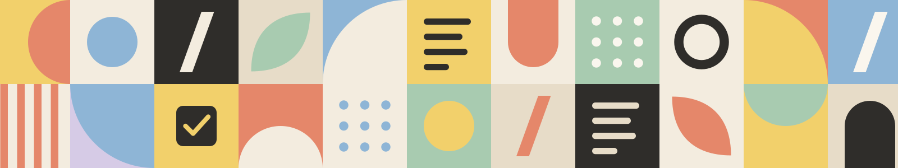

Free
$0
7-day history · 5 guests

Everything you need to switch from an old wiki or a pile of shared docs. This is a real, editable page: change anything, and ask about anything right where the question comes up.
1Type / on any line, pick Ask the team
2The answer lands right under it
Does our page history come along?
Kenning teamExample
Yes, up to your plan's limit: 30 days on Plus, a full year on Business. Importing your wiki
Tick what your team can't do without.
Nearly everything, and in the shape you left it.
Up to 50,000 pages import in the background while you keep working. Bigger than that? Ask us, and we'll plan the batches with you.
You pay per member, per month. Guests are free, and paying yearly saves 20%.
| Plan | Price | Guests | Page history | Sign-in | Best for |
|---|---|---|---|---|---|
| Free | $0 | 5 | 7 days | Two-factor | Trying it out |
| Plus | $8 | 50 | 30 days | Two-factor | Small teams |
| Business | $16 | 250 | 1 year | SAML SSO | Growing companies |
| Enterprise | Custom | Unlimited | Unlimited | SSO + SCIM | Large orgs |
$0
7-day history · 5 guests
$8 per member
30-day history · 50 guests
$16 per member
1-year history · SAML SSO
Custom price
Unlimited history · SCIM
Members are the people on your team who write and edit. Guests, like clients and freelancers, are free up to your plan's guest limit. Monthly billing costs 25% more than yearly.
Yes. Every workspace gets one 14-day Business trial, no card needed. When it ends you drop back to Free, and nothing gets deleted.
Nonprofits and schools get 50% off Plus and Business.
How it works
Most chat widgets float over a page and know nothing about it. Here the chat is part of the page: a document whose slash menu has one extra block, Ask the team. The question becomes a block right where it came up, the answer arrives as a callout under it, and the notes the visitor fills in go along as context, so the team reads their requirements, not just their question.
It's a custom chat UI on Stand's Visitor API (beta), in plain JavaScript with no dependencies and no stand.js. Stand routes the conversation, runs the AI Stand-in and can bring in a person from the team; the page does everything you see.
/ask filters the menu). Write a question and press Enter. The answer comes back in a few seconds, as a callout right under it.site: 'demo', Stand Chat's shared demo site, which works on any domain. Its demo Stand-in follows the page's private prompt and answers as Kenning's team, but Kenning is made up. With your own Site ID, your own Stand-ins and team answer.The page is a small block editor. Each block is a .blk with its words in a contenteditable element; the DOM is the document, and saving walks it into JSON. A / at the start of a line (or after a space) opens the menu at the caret, typing filters it, and Enter turns the line into the chosen block. Ask the team is one more block type, whose content happens to be a conversation.
root.addEventListener('input', (e) => {
if (e.inputType === 'insertText' && e.data === '/') {
const before = textBeforeCaret(text);
// A "/" at the start of a line or after a space opens the menu; "and/or" doesn't.
if (before === '/' || /\s\/$/.test(before)) startSlash(text);
}
});
function pickSlash(item) {
// …first, "/query" comes out of the line.
if (item.type === 'ask') return hooks.onAsk({ block, replace: lineIsEmpty });
if (lineIsEmpty) convert(block, item.type);
else insertAfter(block, createBlock(item.type));
}The menu item shows who will answer before anyone asks: the name, the avatar and the AI marker come from Stand's discovery, and so does "Nobody can answer right now" when no one is around. Nothing reaches Stand until a question is sent; the first one creates the conversation.
Selecting text anywhere on the page, even in a table cell or in an answer, brings up the formatting toolbar with Ask about this in front. The new ask block lands right after the paragraph and quotes the selection, and the quote goes along with the question. In an answer, it becomes a follow-up in that same block. On phones the toolbar sits below the selection, clear of the phone's own copy menu; from the keyboard, Alt+F10 reaches it.
/ask about “Guests are free” under “Plans and pricing”: Is there a limit?Every ask block is a thread, but they all share one Stand session, so a visitor's questions count as one chat however many blocks they open. Each message starts with a short prefix that says where it was asked:
/ask under “Importing your wiki”: Do comments come along when we import?
/reply under “Importing your wiki”: And how far back does history go on Plus?
/ask about “Guests are free” under “Plans and pricing”: Is there a limit?
(Doc notes: Team: 11–50 · Tools: hosted wiki · Needs: single sign-on)The team sees where every question came from, and the page can read the prefix back. Each block keeps the exact messages it sent, and an answer belongs to the latest question before it. After a reload, threads.js puts every message back in its block; a question the page lost track of gets a new block under the heading its prefix names.
for (const m of messages) {
if (m.senderType === 'visitor') {
// The block that sent this exact text, or a new one under the heading it names.
current = blockThatSent(m.body) ?? newBlockUnder(parseQuestion(m.body).heading);
threads.get(current).push(question(m));
} else {
threads.get(current).push(answer(m)); // Answers follow the latest question.
}
}While an answer is on its way, the other blocks wait ("Waiting for the answer under “Importing your wiki”…"), so no answer lands in the wrong place.
The first question starts the conversation with a private prompt: who's speaking and the facts to answer from, how this page works, and the visitor's notes at that moment, all within 2,000 characters. Later questions add a (Doc notes: …) line only when the notes changed since the team last saw them, which the page works out from the transcript itself. This is what the team, and the AI Stand-in, will read with your next question, live from this page:
Loading…The prompt names the parts of the page and asks the Stand-in to point at them in double brackets. The page turns [[Toggle: How pricing works]] into an inline mention that scrolls there, opens the toggle and lights the block up. The names are a closed list, matched without fuss over case, spaces or a trailing period. Anything unknown stays plain text, and a reference only ever moves you within the page.
Point to the page by exact name in double brackets, at most two per reply: [[Heading: About your team]] [[Heading: Importing your wiki]] [[Database: Plans]] [[Toggle: How pricing works]] [[Toggle: Can we try Business first?]] [[Heading: Security and admin]] …const target = resolve(name); // "Toggle: How pricing works" → { id, label }
if (target) {
const a = document.createElement('a');
a.className = 'mention';
a.href = `#${target.id}`; // Works as a plain link, too.
a.dataset.ref = target.id;
a.textContent = target.label;
parent.append(a);
} else {
parent.append(name.replace(/^(heading|toggle|database)\s*:\s*/i, ''));
}A conversation arrives in Stand with the visitor's requirements doc attached: team size, tools, what must not break, the must-haves they ticked, and every question pinned to the part of the page that raised it. Selections show exactly which words gave them pause. That's the product learning: not only what people ask, but where on the page they hesitate, and what their team needs before they switch.
sessionStorage (per tab, under keys starting with slash-to-ask:). Without storage, the page still works; it just forgets on reload.Built by Claude Opus 5.5 in Claude Code. A lead session turned a list of ideas into ten sharper ones, wrote this example's brief, and reviewed what came back. A separate agent built the page in its own git worktree: it studied the reference product's website and published pages to get the tone and the details right, tuned the prompt in real conversations with Stand's demo Stand-in, and checked every state in headless Chrome at desktop and phone sizes, reading its own screenshots.
Once AI writes the front end, a chat can take the shape of your product instead of a bubble in the corner. Stand's Visitor API keeps the conversation, the AI Stand-in and your team behind it.
The prompt, lightly edited
Given Stand Chat's target audience, find ten products they look up to and would recognize, products that might have the same problems as their own. It could be the market's dominant player. For each, work out how it could embed Stand on its website in an innovative way that pulls visitors in to interact. Not just a chat button, but something novel: something our audience would see and think, "I want that on MY website." Build each one in a separate session, as its own pull request. Don't use the brand names, but make each website resemble its product in a subtle way.
The follow-up
Do the same again, but raise the quality bar. Feel free to change the ideas.
This example's brief
The reference: a connected, block-based workspace, where "/" opens a menu of blocks. The company's "is it right for your team?" page is a real, editable document. One block in the "/" menu is Ask the team: the question becomes a block, and the answer arrives as a callout right under it. Selecting text offers "Ask about this". Fill-in notes (team size, tools, what must not break, must-have to-dos) go into the first question's prompt, and later questions add a notes line when they change. Each ask block is a thread over one Stand session; replies can point at blocks with [[…]] references that scroll there and light them up. Show a seeded, clearly illustrative example (an answered question and the slash menu) in the first viewport.
If you try this yourself
demo Site ID, so the agent can hold real conversations while it builds, then switch to yours.npx degit standchat/examples/slash-to-ask my-slash-to-askThen change site: 'demo' in app.js to your own Site ID, and the facts in the prompt in threads.js to yours.